近 7 天 · 一根 15 分 K 同時站上 7 / 14 / 25 / 99 / 120
前一根收盤完全在這五條均線下方，這一根收盤同時站上。不必過 MA200。進場用訊號下一根開盤。 掃描幣安 U 本位流動永續（加密+股票）近 7 天、237 個合約。訊號區間 10-18 → 10-25（GMT+8）。產生於 2026-10-25 22:38。 圖例每筆上面是 15 分，底下是同一時間的 1 小時圖。圖上的 MA200 只是對照。僅供型態對照，不是進出場建議。
圖例
黃虛線：15 分圖是同時站上 7/14/25/99/120 的那根；1 小時圖是這根 15 分所在的小時 K。
INIT 10-24 00:00 · 4h +14.08%
15 分圖 · 黃虛線是同時站上 7/14/25/99/120 的那根（圖上 MA200 只是對照）
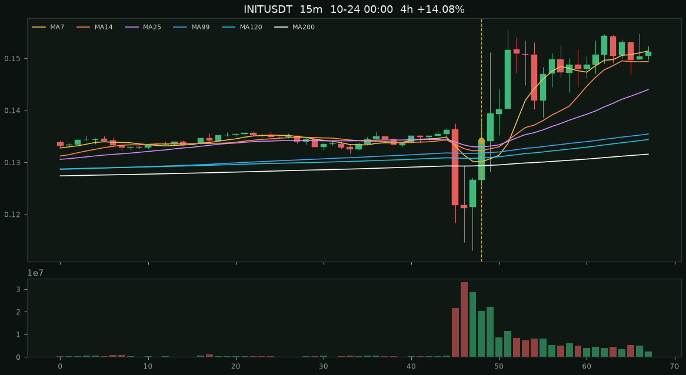
1 小時圖 · 黃虛線是上面那根 15 分所在的小時 K
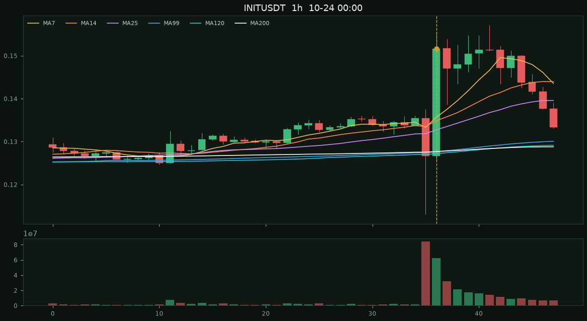
寬度 2.150% · 量比 3.65× · 15m / 1h / 4h / 8h：+3.89% / +12.48% / +14.08% / +10.46% · 實體穿越
UNITREE 10-23 09:30 · 4h +11.05%
15 分圖 · 黃虛線是同時站上 7/14/25/99/120 的那根（圖上 MA200 只是對照）
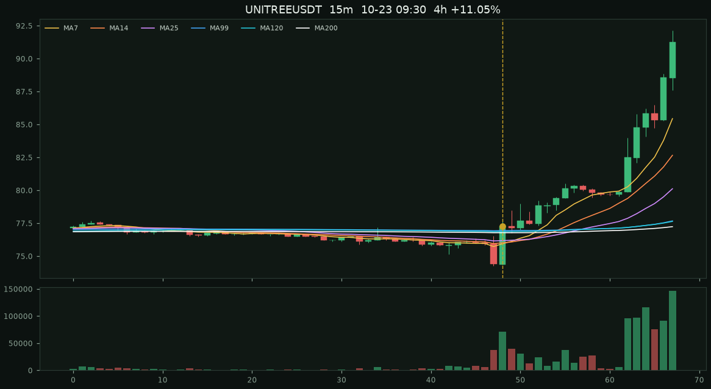
1 小時圖 · 黃虛線是上面那根 15 分所在的小時 K
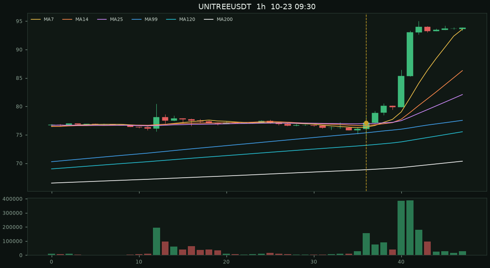
寬度 1.579% · 量比 8.43× · 15m / 1h / 4h / 8h：-0.18% / +2.02% / +11.05% / +21.11% · 實體穿越
ARIA 10-23 13:00 · 4h +8.75%
15 分圖 · 黃虛線是同時站上 7/14/25/99/120 的那根（圖上 MA200 只是對照）
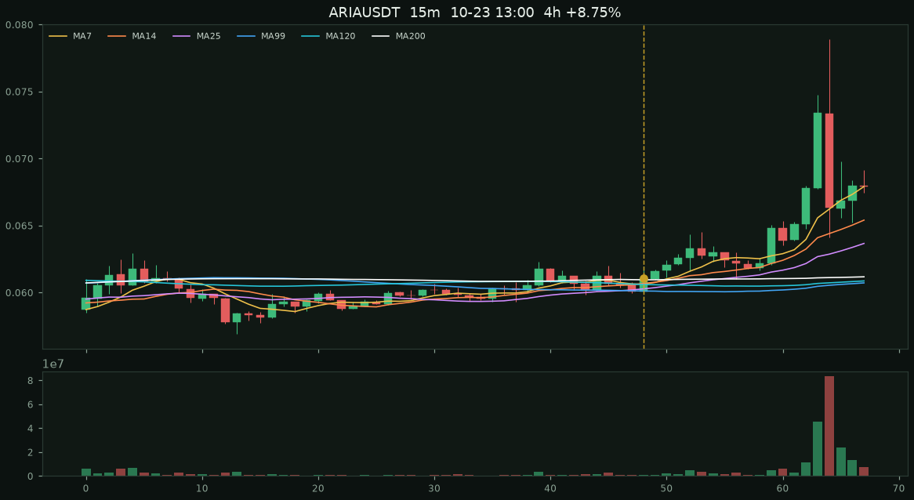
1 小時圖 · 黃虛線是上面那根 15 分所在的小時 K
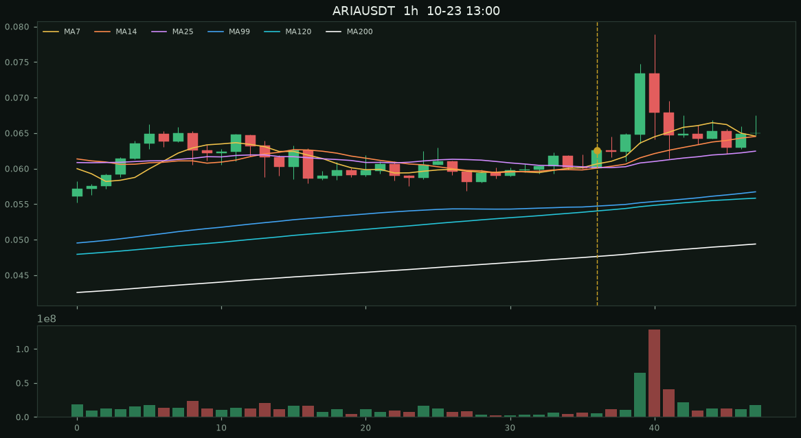
寬度 0.854% · 量比 1.00× · 15m / 1h / 4h / 8h：+0.95% / +3.74% / +8.75% / +6.97% · 實體穿越
SPCX 10-21 03:45 · 4h +7.85%
15 分圖 · 黃虛線是同時站上 7/14/25/99/120 的那根（圖上 MA200 只是對照）

1 小時圖 · 黃虛線是上面那根 15 分所在的小時 K
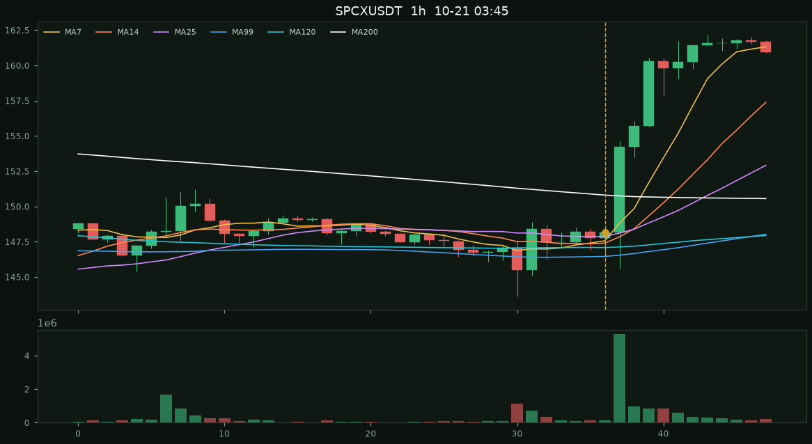
寬度 0.401% · 量比 1.57× · 15m / 1h / 4h / 8h：+2.50% / +4.09% / +7.85% / +9.04% · 實體穿越
BULLA 10-21 10:15 · 4h +7.76%
15 分圖 · 黃虛線是同時站上 7/14/25/99/120 的那根（圖上 MA200 只是對照）
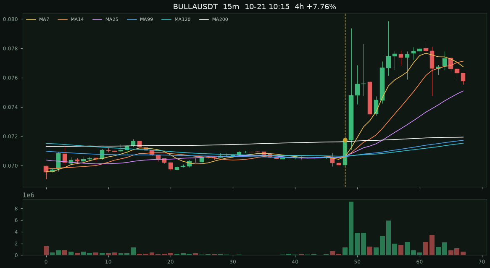
1 小時圖 · 黃虛線是上面那根 15 分所在的小時 K
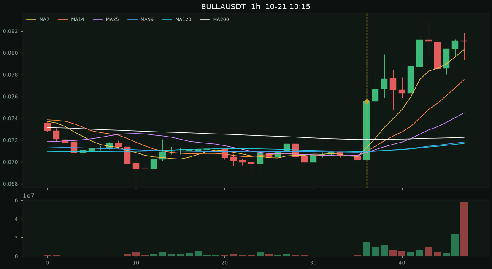
寬度 0.306% · 量比 6.75× · 15m / 1h / 4h / 8h：+4.24% / +2.45% / +7.76% / +11.03% · 實體穿越
SPX 10-20 21:45 · 4h +6.49%
15 分圖 · 黃虛線是同時站上 7/14/25/99/120 的那根（圖上 MA200 只是對照）
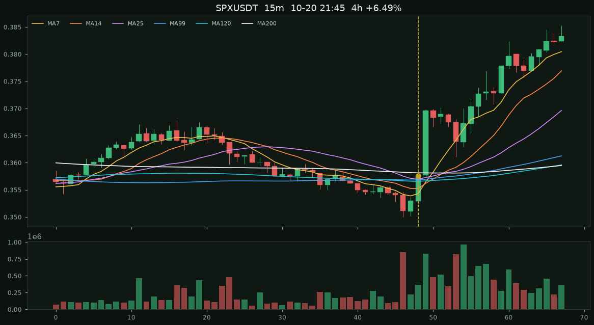
1 小時圖 · 黃虛線是上面那根 15 分所在的小時 K
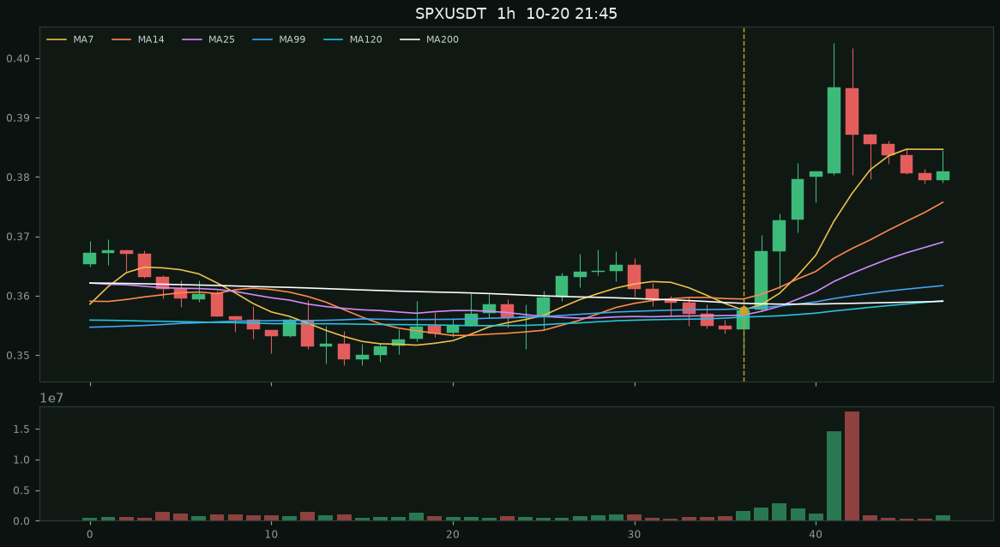
寬度 0.912% · 量比 1.86× · 15m / 1h / 4h / 8h：+3.33% / +2.74% / +6.49% / +7.27% · 實體穿越
ZEREBRO 10-21 16:15 · 4h +6.23%
15 分圖 · 黃虛線是同時站上 7/14/25/99/120 的那根（圖上 MA200 只是對照）
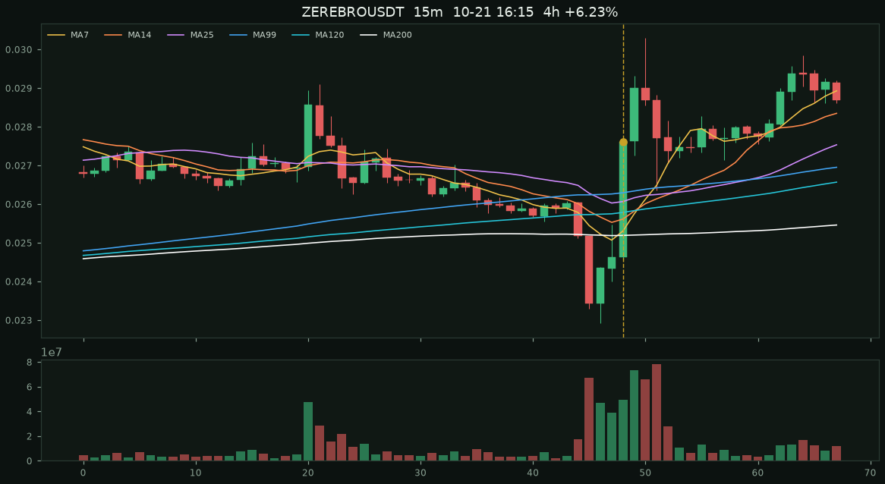
1 小時圖 · 黃虛線是上面那根 15 分所在的小時 K
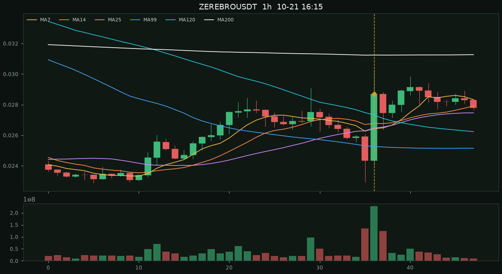
寬度 4.758% · 量比 3.34× · 15m / 1h / 4h / 8h：+4.95% / -0.93% / +6.23% / +1.60% · 實體穿越
KMNO 10-21 16:30 · 4h +5.72%
15 分圖 · 黃虛線是同時站上 7/14/25/99/120 的那根（圖上 MA200 只是對照）
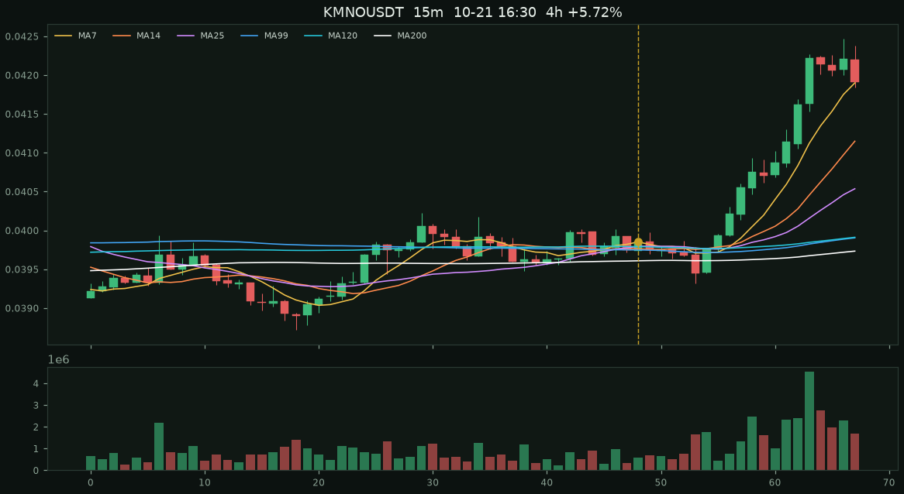
1 小時圖 · 黃虛線是上面那根 15 分所在的小時 K
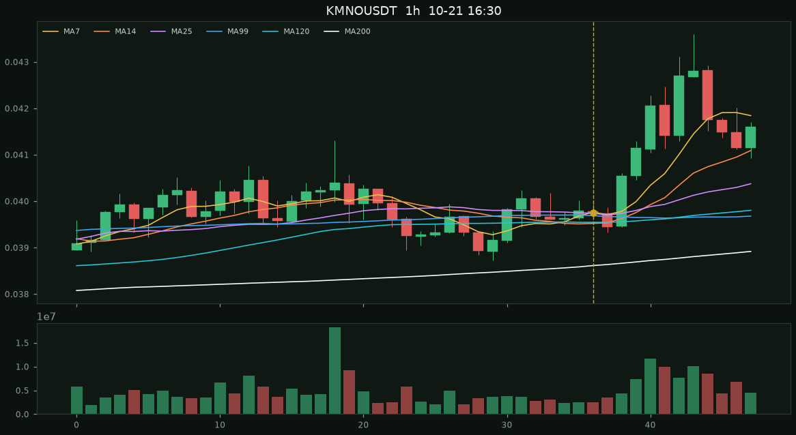
寬度 0.178% · 量比 0.84× · 15m / 1h / 4h / 8h：-0.28% / -0.45% / +5.72% / +5.12% · 實體穿越
LUMIA 10-22 14:15 · 4h -19.28%
15 分圖 · 黃虛線是同時站上 7/14/25/99/120 的那根（圖上 MA200 只是對照）
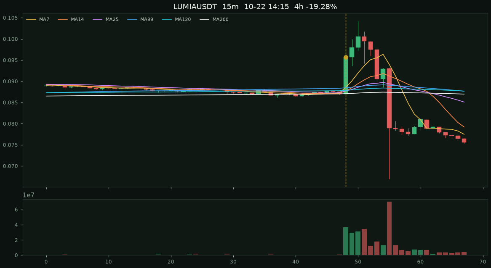
1 小時圖 · 黃虛線是上面那根 15 分所在的小時 K
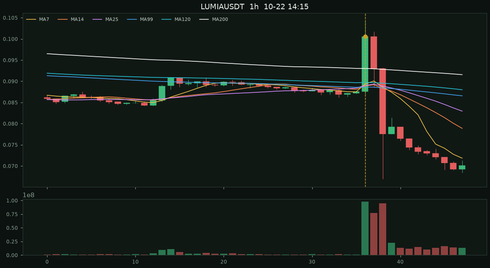
寬度 1.378% · 量比 16.90× · 15m / 1h / 4h / 8h：+2.34% / +1.88% / -19.28% / -23.79% · 實體穿越
SOXL 10-25 19:45 · 4h —
15 分圖 · 黃虛線是同時站上 7/14/25/99/120 的那根（圖上 MA200 只是對照）
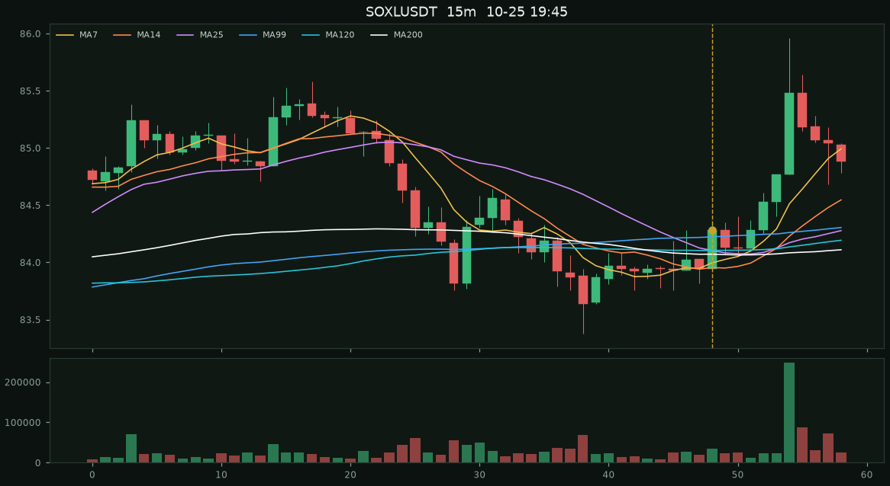
1 小時圖 · 黃虛線是上面那根 15 分所在的小時 K
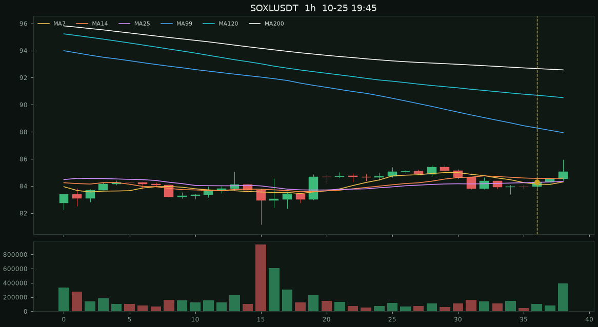
寬度 0.330% · 量比 1.26× · 15m / 1h / 4h / 8h：-0.18% / +0.30% / — / — · 實體穿越
CVC 10-25 20:15 · 4h —
15 分圖 · 黃虛線是同時站上 7/14/25/99/120 的那根（圖上 MA200 只是對照）
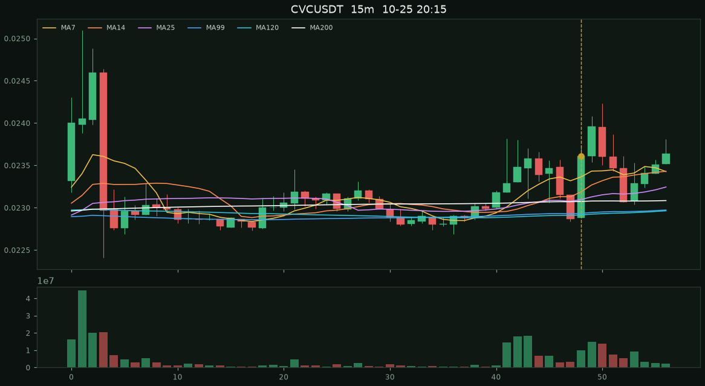
1 小時圖 · 黃虛線是上面那根 15 分所在的小時 K
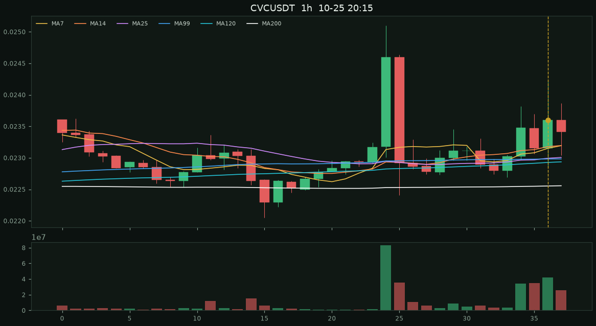
寬度 1.786% · 量比 2.16× · 15m / 1h / 4h / 8h：+1.48% / -2.29% / — / — · 實體穿越
ZRO 10-25 21:30 · 4h —
15 分圖 · 黃虛線是同時站上 7/14/25/99/120 的那根（圖上 MA200 只是對照）
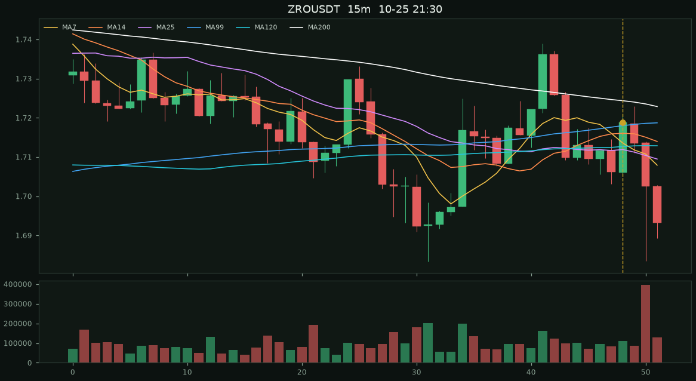
1 小時圖 · 黃虛線是上面那根 15 分所在的小時 K
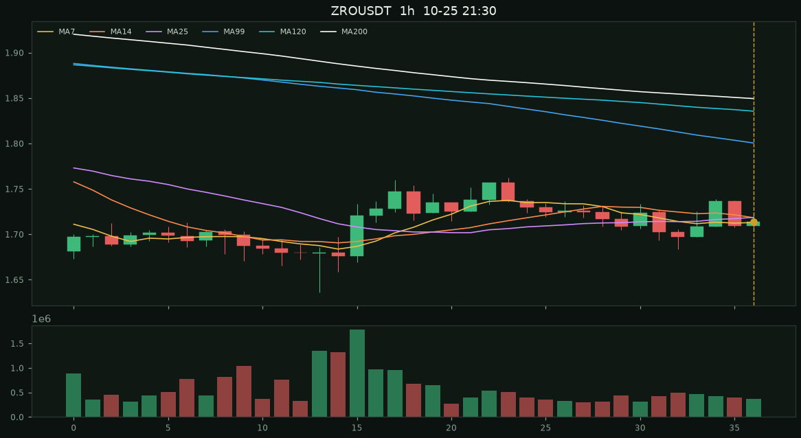
寬度 0.347% · 量比 1.03× · 15m / 1h / 4h / 8h：-0.29% / — / — / — · 實體穿越
COIN 10-25 21:30 · 4h —
15 分圖 · 黃虛線是同時站上 7/14/25/99/120 的那根（圖上 MA200 只是對照）

1 小時圖 · 黃虛線是上面那根 15 分所在的小時 K
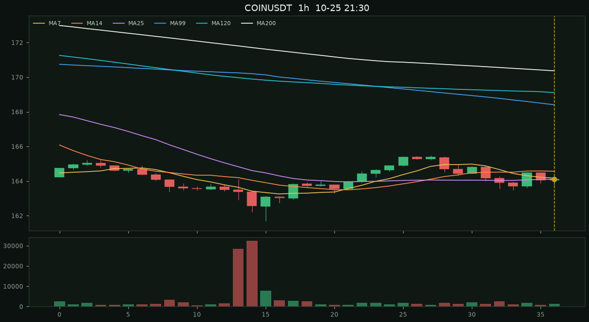
寬度 0.077% · 量比 1.75× · 15m / 1h / 4h / 8h：-0.04% / — / — / — · 實體穿越
RE 10-25 21:30 · 4h —
15 分圖 · 黃虛線是同時站上 7/14/25/99/120 的那根（圖上 MA200 只是對照）
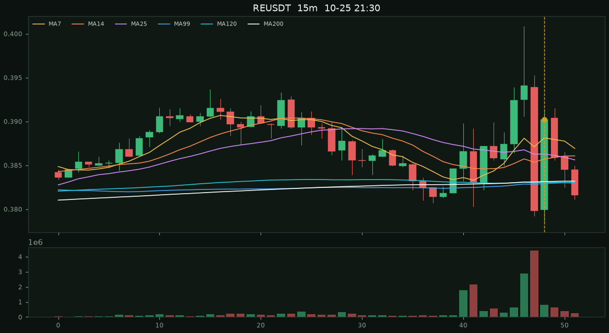
1 小時圖 · 黃虛線是上面那根 15 分所在的小時 K
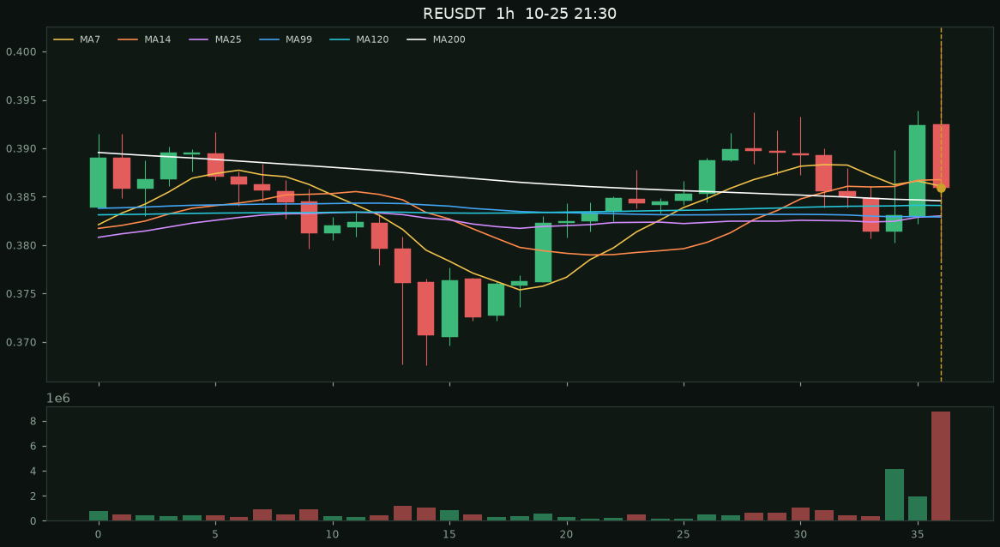
寬度 1.117% · 量比 1.06× · 15m / 1h / 4h / 8h：-1.15% / — / — / — · 實體穿越
GTC 10-25 21:45 · 4h —
15 分圖 · 黃虛線是同時站上 7/14/25/99/120 的那根（圖上 MA200 只是對照）
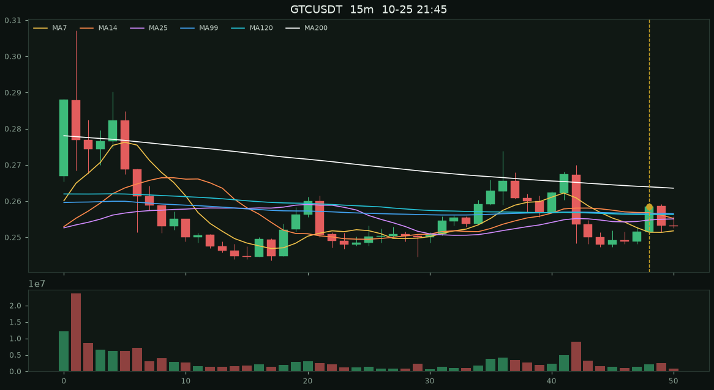
1 小時圖 · 黃虛線是上面那根 15 分所在的小時 K
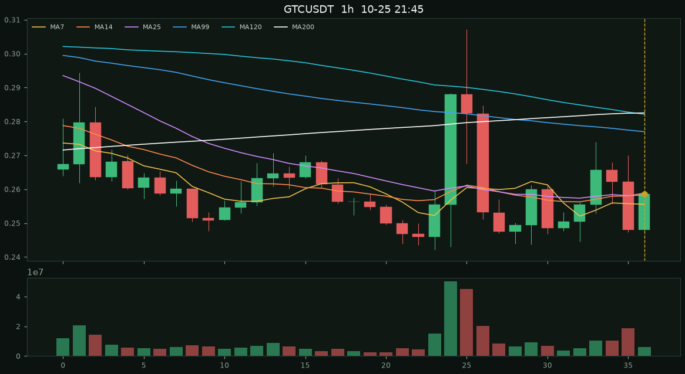
寬度 1.664% · 量比 0.84× · 15m / 1h / 4h / 8h：-2.05% / — / — / — · 實體穿越
FOLKS 10-25 21:45 · 4h —
15 分圖 · 黃虛線是同時站上 7/14/25/99/120 的那根（圖上 MA200 只是對照）
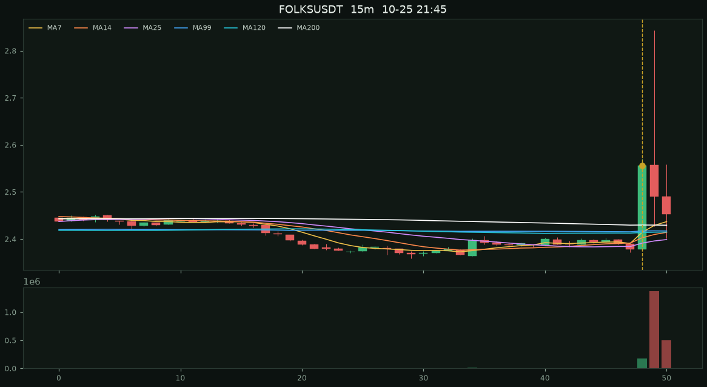
1 小時圖 · 黃虛線是上面那根 15 分所在的小時 K
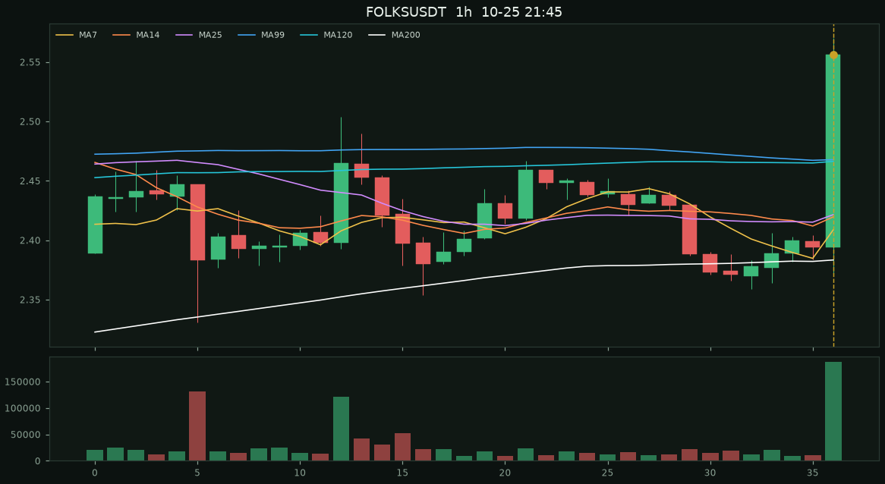
寬度 1.319% · 量比 14.59× · 15m / 1h / 4h / 8h：-2.62% / — / — / — · 實體穿越
ARK 10-21 17:15 · 4h +4.09%
15 分圖 · 黃虛線是同時站上 7/14/25/99/120 的那根（圖上 MA200 只是對照）
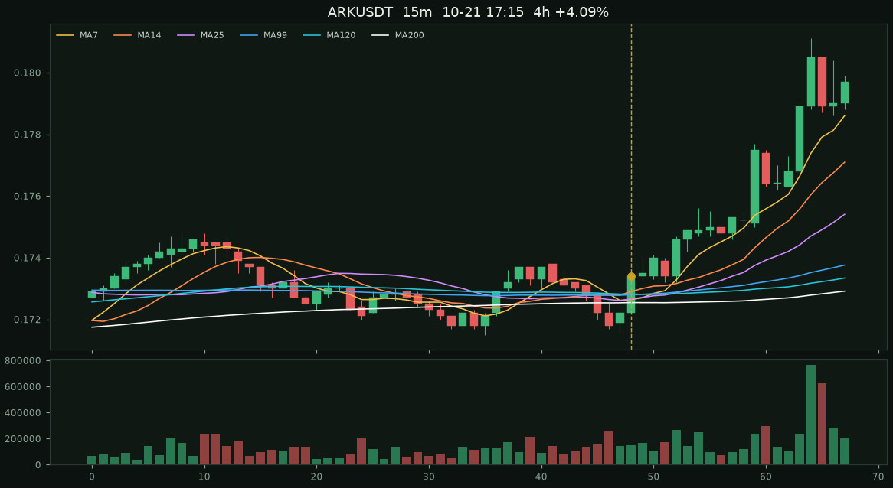
1 小時圖 · 黃虛線是上面那根 15 分所在的小時 K
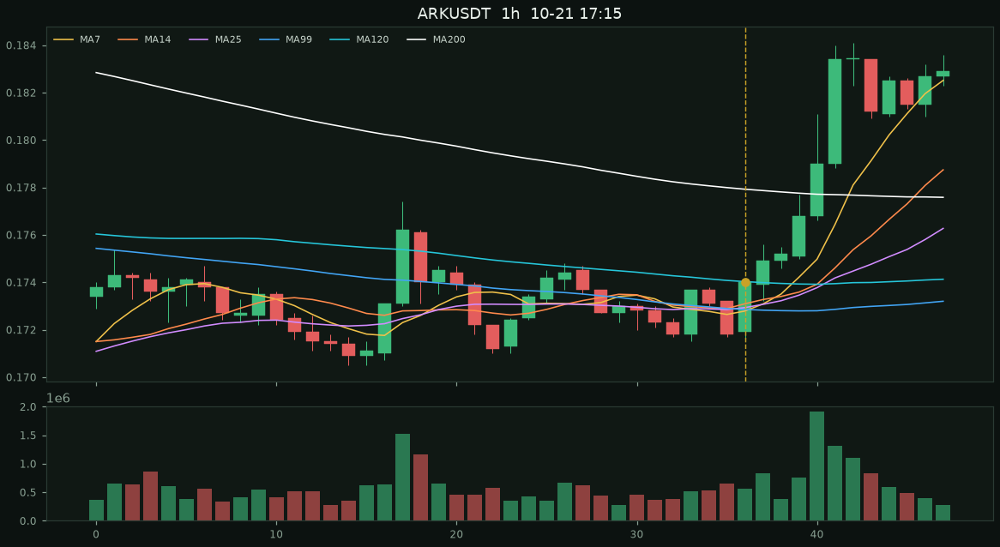
寬度 0.120% · 量比 1.16× · 15m / 1h / 4h / 8h：+0.06% / +0.69% / +4.09% / +4.90% · 實體穿越
INIT 10-20 19:45 · 4h +3.87%
15 分圖 · 黃虛線是同時站上 7/14/25/99/120 的那根（圖上 MA200 只是對照）
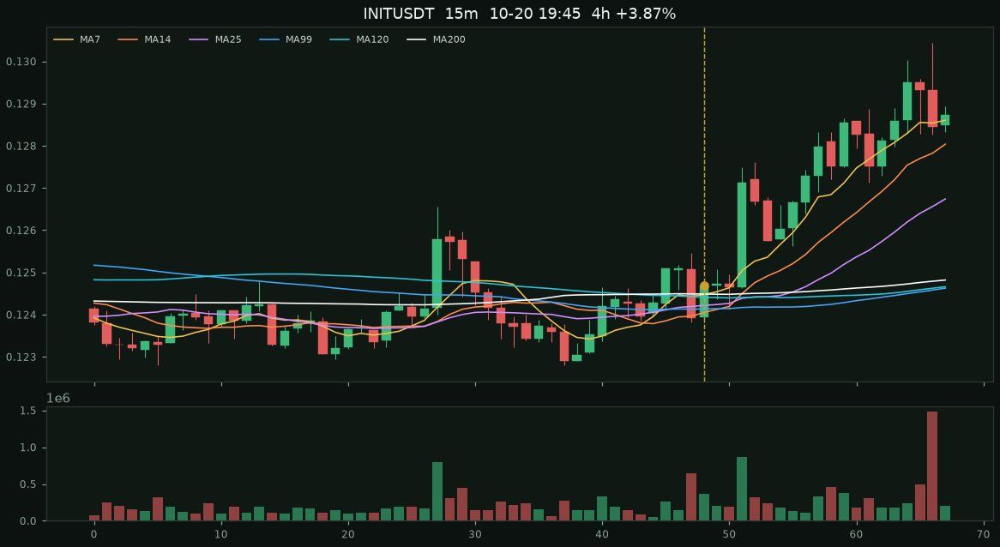
1 小時圖 · 黃虛線是上面那根 15 分所在的小時 K
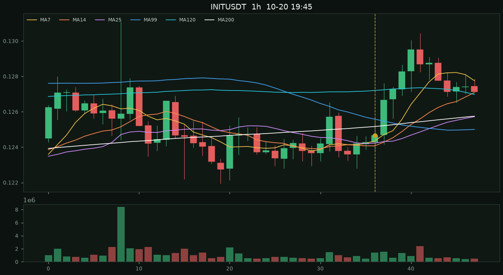
寬度 0.378% · 量比 1.63× · 15m / 1h / 4h / 8h：+0.03% / +1.59% / +3.87% / +1.96% · 實體穿越
ORDER 10-20 20:15 · 4h +2.96%
15 分圖 · 黃虛線是同時站上 7/14/25/99/120 的那根（圖上 MA200 只是對照）
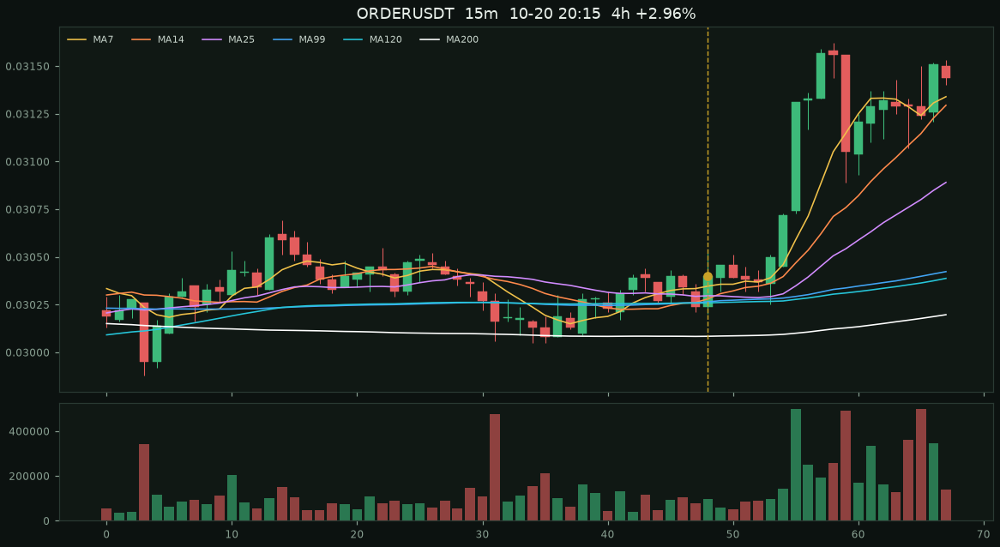
1 小時圖 · 黃虛線是上面那根 15 分所在的小時 K
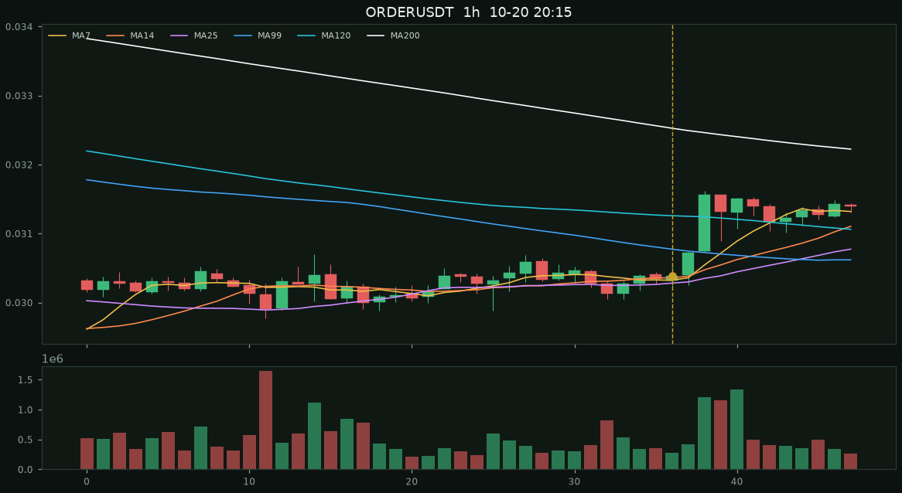
寬度 0.253% · 量比 0.77× · 15m / 1h / 4h / 8h：+0.23% / -0.07% / +2.96% / +2.83% · 實體穿越
RE 10-20 19:30 · 4h +2.42%
15 分圖 · 黃虛線是同時站上 7/14/25/99/120 的那根（圖上 MA200 只是對照）
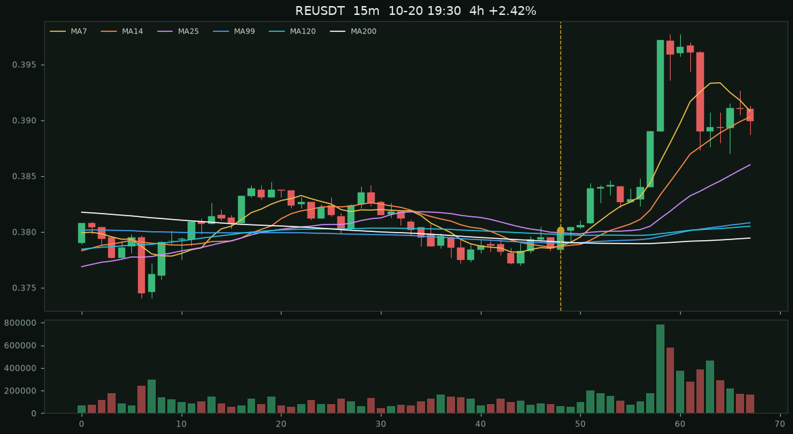
1 小時圖 · 黃虛線是上面那根 15 分所在的小時 K
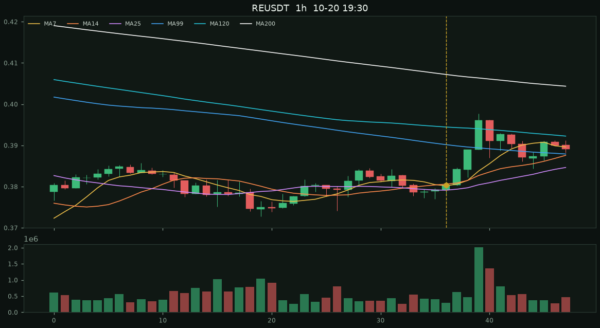
寬度 0.378% · 量比 0.62× · 15m / 1h / 4h / 8h：+0.08% / +1.03% / +2.42% / +1.92% · 實體穿越
MTL 10-20 20:15 · 4h +2.19%
15 分圖 · 黃虛線是同時站上 7/14/25/99/120 的那根（圖上 MA200 只是對照）
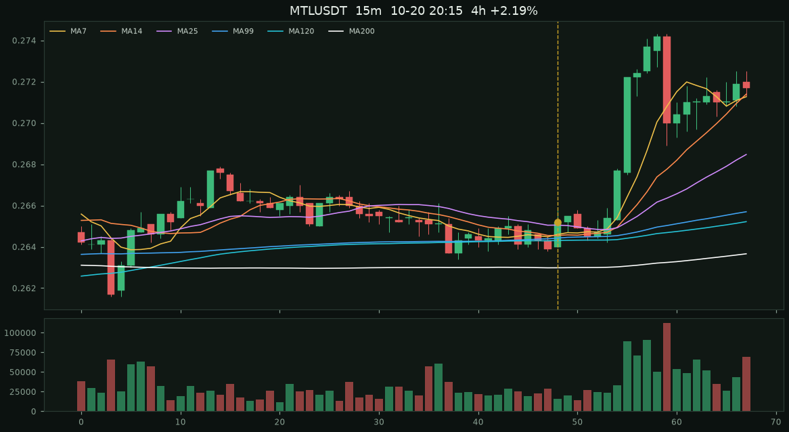
1 小時圖 · 黃虛線是上面那根 15 分所在的小時 K
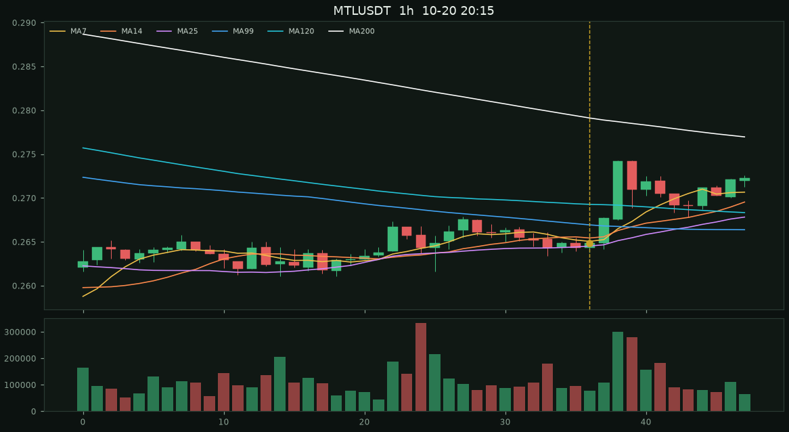
寬度 0.286% · 量比 0.56× · 15m / 1h / 4h / 8h：+0.11% / -0.19% / +2.19% / +1.70% · 實體穿越
KAIA 10-21 22:00 · 4h +2.16%
15 分圖 · 黃虛線是同時站上 7/14/25/99/120 的那根（圖上 MA200 只是對照）
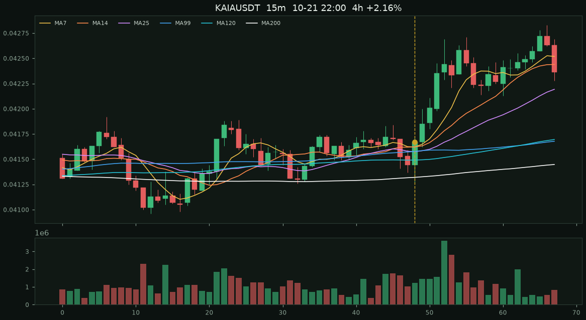
1 小時圖 · 黃虛線是上面那根 15 分所在的小時 K
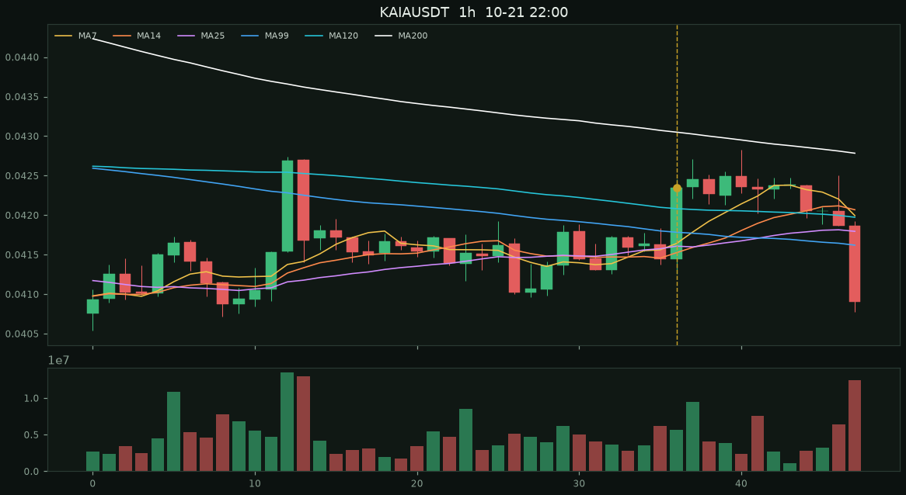
寬度 0.322% · 量比 1.21× · 15m / 1h / 4h / 8h：+0.43% / +1.85% / +2.16% / +1.10% · 實體穿越
過濾對照
| 條件 | 筆數 | 幣數 | 下一根假突破 | 15m勝率 | 15m均 | 30m勝率 | 30m均 | 1h勝率 | 1h均 | 2h勝率 | 2h均 | 4h勝率 | 4h均 | 8h勝率 | 8h均 |
|---|---|---|---|---|---|---|---|---|---|---|---|---|---|---|---|
| 原始：一根K從帶下收到帶上 | 255 | 134 | 34.9% | 43.1% | +0.102% | 41.6% | +0.037% | 44.8% | +0.096% | 44.8% | +0.014% | 45.2% | +0.066% | 45.9% | +0.096% |
| 實體穿越（開在帶下、收在帶上） | 248 | 132 | 34.7% | 43.1% | +0.107% | 41.5% | +0.036% | 44.4% | +0.094% | 44.9% | +0.014% | 44.4% | +0.048% | 45.5% | +0.047% |
| 帶子寬度 ≤ 1.0% | 210 | 117 | 34.8% | 43.8% | +0.090% | 41.9% | +0.057% | 44.2% | +0.089% | 45.7% | +0.150% | 46.4% | +0.208% | 45.8% | +0.288% |
| 帶子寬度 ≤ 0.4% | 100 | 67 | 36.0% | 39.0% | +0.025% | 39.0% | -0.019% | 39.8% | +0.035% | 43.9% | +0.175% | 45.4% | +0.226% | 47.9% | +0.138% |
| 帶子寬度 > 1.0% | 45 | 40 | 35.6% | 40.0% | +0.158% | 40.0% | -0.056% | 47.6% | +0.130% | 40.5% | -0.661% | 39.0% | -0.651% | 46.3% | -0.842% |
| 放量 ≥ 1.5× | 107 | 84 | 25.2% | 46.7% | +0.293% | 43.9% | +0.221% | 48.6% | +0.259% | 44.8% | -0.135% | 51.0% | -0.026% | 47.5% | +0.266% |
| 實體 + 寬度≤1% + 放量≥1.5× | 68 | 60 | 22.1% | 50.0% | +0.295% | 41.2% | +0.268% | 44.8% | +0.237% | 44.8% | +0.154% | 56.7% | +0.341% | 48.4% | +0.804% |
寬度 =（最高均線 / 最低均線 − 1）× 100%，用突破前一根的均線。假突破 = 進場那根 15 分收盤又跌回最高均線下方。
訊號表（依 4h 報酬排序，最多 80 筆）
| 時間 | 標的 | 進場 | 寬度 | 量比 | 實體 | 15m | 1h | 4h | 8h |
|---|---|---|---|---|---|---|---|---|---|
| 10-24 00:00 | INIT | 0.13415 | 2.15% | 3.65× | 是 | +3.89% | +12.48% | +14.08% | +10.46% |
| 10-23 09:30 | UNITREE | 77.28 | 1.58% | 8.43× | 是 | -0.18% | +2.02% | +11.05% | +21.11% |
| 10-23 13:00 | ARIA | 0.06101 | 0.85% | 1.00× | 是 | +0.95% | +3.74% | +8.75% | +6.97% |
| 10-21 03:45 | SPCX | 148.18 | 0.40% | 1.57× | 是 | +2.50% | +4.09% | +7.85% | +9.04% |
| 10-21 10:15 | BULLA | 0.07174 | 0.31% | 6.75× | 是 | +4.24% | +2.45% | +7.76% | +11.03% |
| 10-20 21:45 | SPX | 0.3577 | 0.91% | 1.86× | 是 | +3.33% | +2.74% | +6.49% | +7.27% |
| 10-21 16:15 | ZEREBRO | 0.027632 | 4.76% | 3.34× | 是 | +4.95% | -0.93% | +6.23% | +1.60% |
| 10-21 16:30 | KMNO | 0.03986 | 0.18% | 0.84× | 是 | -0.28% | -0.45% | +5.72% | +5.12% |
| 10-21 03:45 | AKE | 0.031066 | 0.73% | 0.98× | 是 | -0.25% | +1.06% | +5.51% | +10.94% |
| 10-20 20:15 | BIRB | 0.04722 | 0.50% | 1.17× | 是 | +0.08% | +0.19% | +5.06% | +4.83% |
| 10-25 02:00 | KAT | 0.004393 | 1.94% | 0.76× | 是 | +0.36% | -1.41% | +4.19% | -4.33% |
| 10-19 18:45 | US | 0.005868 | 0.52% | 0.67× | 是 | -0.63% | -0.87% | +4.11% | +1.28% |
| 10-21 17:15 | ARK | 0.1734 | 0.12% | 1.16× | 是 | +0.06% | +0.69% | +4.09% | +4.90% |
| 10-20 19:45 | INIT | 0.12469 | 0.38% | 1.63× | 是 | +0.03% | +1.59% | +3.87% | +1.96% |
| 10-20 17:30 | LAB | 0.04147 | 2.25% | 11.46× | 是 | -0.19% | -0.10% | +3.86% | +5.57% |
| 10-20 09:30 | CHIP | 0.0421 | 0.83% | 0.72× | 是 | -0.74% | -0.43% | +3.85% | +3.21% |
| 10-20 21:45 | UB | 0.11765 | 0.73% | 2.28× | 是 | +2.14% | +2.10% | +3.69% | +7.17% |
| 10-20 02:30 | GRASS | 0.5996 | 0.71% | 2.05× | 是 | +0.27% | +0.17% | +3.57% | +2.62% |
| 10-25 17:30 | DASH | 51.52 | 0.49% | 1.32× | 是 | +0.50% | +0.43% | +3.49% | — |
| 10-21 15:45 | KMNO | 0.03978 | 0.25% | 0.40× | +0.38% | -0.08% | +3.42% | +7.62% | |
| 10-20 21:45 | ZRO | 1.9142 | 1.95% | 3.40× | 是 | +3.66% | +4.40% | +3.22% | +6.47% |
| 10-20 18:00 | MOVR | 1.3436 | 0.41% | 0.98× | 是 | -0.42% | -1.32% | +2.96% | +5.88% |
| 10-20 20:15 | ORDER | 0.03039 | 0.25% | 0.77× | 是 | +0.23% | -0.07% | +2.96% | +2.83% |
| 10-20 20:15 | ZAMA | 0.07215 | 0.70% | 1.18× | 是 | +0.12% | -0.51% | +2.90% | +3.12% |
| 10-20 17:15 | SKYAI | 0.02909 | 0.59% | 1.07× | 是 | -0.45% | -0.14% | +2.68% | +5.74% |
| 10-20 19:30 | RE | 0.3801 | 0.38% | 0.62× | 是 | +0.08% | +1.03% | +2.42% | +1.92% |
| 10-20 21:30 | ZAMA | 0.07236 | 0.43% | 5.08× | 是 | +1.60% | +5.28% | +2.38% | +3.41% |
| 10-20 21:45 | MET | 0.3356 | 1.35% | 2.04× | 是 | +4.02% | +4.26% | +2.32% | +2.41% |
| 10-19 20:00 | US | 0.00586 | 0.47% | 0.80× | 是 | +0.96% | +1.60% | +2.22% | +2.25% |
| 10-20 20:15 | MTL | 0.2652 | 0.29% | 0.56× | 是 | +0.11% | -0.19% | +2.19% | +1.70% |
| 10-21 22:00 | KAIA | 0.04167 | 0.32% | 1.21× | 是 | +0.43% | +1.85% | +2.16% | +1.10% |
| 10-20 21:45 | KAT | 0.004012 | 0.30% | 0.32× | 是 | +1.72% | +1.97% | +2.14% | +1.87% |
| 10-20 09:30 | AERO | 0.7942 | 0.47% | 2.64× | 是 | +0.67% | +1.33% | +2.03% | +1.49% |
| 10-20 20:15 | RENDER | 1.803 | 0.47% | 1.24× | 是 | +0.17% | -0.44% | +2.00% | +2.27% |
| 10-20 00:30 | DOS | 0.184 | 0.60% | 0.53× | 是 | +0.43% | +0.11% | +1.85% | +3.86% |
| 10-20 21:45 | ALGO | 0.11088 | 0.37% | 1.10× | 是 | +2.02% | +2.62% | +1.84% | +2.14% |
| 10-21 22:15 | AMD | 546.55 | 0.52% | 1.51× | 是 | -0.08% | +0.12% | +1.83% | +0.08% |
| 10-21 02:45 | BCH | 278.17 | 0.34% | 0.19× | 是 | +0.17% | +0.88% | +1.82% | +3.34% |
| 10-22 16:00 | DOS | 0.2072 | 0.31% | 1.58× | 是 | +0.00% | +0.05% | +1.74% | +1.88% |
| 10-23 10:00 | CAP | 0.06878 | 0.26% | 1.68× | 是 | -0.03% | +0.17% | +1.72% | +4.45% |
| 10-24 13:00 | INIT | 0.14126 | 5.04% | 3.24× | 是 | -0.23% | +1.20% | +1.70% | +5.95% |
| 10-20 02:30 | GALA | 0.001895 | 0.21% | 0.69× | 是 | +0.32% | +0.26% | +1.69% | +1.79% |
| 10-19 23:15 | DOS | 0.184 | 0.38% | 2.06× | 是 | -0.71% | -0.87% | +1.68% | +3.48% |
| 10-20 19:30 | PONS | 0.2678 | 0.83% | 1.56× | 是 | -0.37% | +1.12% | +1.68% | +3.51% |
| 10-24 21:30 | TA | 0.05009 | 0.32% | 0.66× | 是 | +0.20% | +0.30% | +1.58% | +3.05% |
| 10-20 20:15 | KAT | 0.004013 | 0.45% | 1.26× | 是 | +0.07% | -1.59% | +1.50% | +2.09% |
| 10-21 21:15 | META | 698.67 | 0.58% | 4.61× | 是 | +0.98% | +1.34% | +1.46% | +4.11% |
| 10-20 21:30 | ANKR | 0.004127 | 0.20% | 0.93× | 是 | +0.97% | +2.83% | +1.43% | +1.57% |
| 10-20 21:45 | XLM | 0.17761 | 0.44% | 1.76× | 是 | +1.98% | +2.42% | +1.38% | +2.24% |
| 10-20 20:15 | ANKR | 0.004126 | 0.21% | 3.50× | 是 | +0.10% | -0.36% | +1.36% | +0.78% |
| 10-19 12:30 | FET | 0.1901 | 0.38% | 0.96× | 是 | +0.37% | +0.37% | +1.21% | -0.42% |
| 10-20 00:00 | GRASS | 0.5964 | 1.36% | 0.82× | 是 | -0.45% | -0.74% | +1.21% | +2.82% |
| 10-19 23:00 | ZRO | 1.8882 | 1.09% | 7.38× | 是 | +2.44% | +3.56% | +1.14% | +1.00% |
| 10-23 21:30 | MSTR | 148.43 | 0.69% | 5.16× | 是 | +0.61% | +0.34% | +1.08% | -0.84% |
| 10-20 00:00 | REZ | 0.003327 | 0.81% | 5.17× | 是 | +2.22% | +0.18% | +1.02% | +2.65% |
| 10-25 00:30 | ZEREBRO | 0.030003 | 0.50% | 0.86× | 是 | +0.38% | +2.41% | +1.02% | +2.58% |
| 10-20 20:15 | ZEN | 5.97 | 0.36% | 0.95× | 是 | +0.03% | -0.27% | +0.99% | +1.68% |
| 10-20 05:30 | KMNO | 0.03924 | 0.61% | 0.52× | 是 | -0.20% | +1.07% | +0.97% | +1.76% |
| 10-21 14:15 | ARK | 0.173 | 0.45% | 1.30× | +0.12% | +0.40% | +0.92% | +4.51% | |
| 10-24 08:15 | BABY | 0.0133 | 1.33% | 3.86× | 是 | -0.53% | +1.05% | +0.90% | +2.11% |
| 10-20 09:30 | JUP | 0.2945 | 0.62% | 0.92× | 是 | -0.20% | +0.03% | +0.81% | +0.44% |
| 10-22 23:15 | INIT | 0.13003 | 0.58% | 8.80× | 是 | -1.06% | -1.02% | +0.76% | -0.02% |
| 10-22 09:15 | UNITREE | 76.82 | 0.62% | 9.86× | 是 | +2.85% | +2.12% | +0.76% | +0.39% |
| 10-23 21:30 | LDO | 0.3878 | 0.50% | 2.14× | 是 | -0.05% | +0.13% | +0.72% | -0.44% |
| 10-20 04:00 | KMNO | 0.03928 | 0.68% | 3.31× | 是 | -0.25% | -0.56% | +0.71% | +2.19% |
| 10-23 21:30 | MUU | 24.25 | 1.38% | 9.81× | 是 | +0.95% | +1.81% | +0.66% | -0.08% |
| 10-23 22:30 | LDO | 0.3883 | 0.40% | 2.15× | 是 | -0.03% | -0.85% | +0.64% | -1.60% |
| 10-20 17:15 | BIRB | 0.04701 | 0.52% | 4.58× | 是 | -0.11% | -0.55% | +0.64% | +5.57% |
| 10-22 18:15 | DOS | 0.2074 | 0.22% | 0.93× | 是 | +0.63% | +0.05% | +0.63% | +2.84% |
| 10-20 21:45 | DASH | 49.75 | 1.05% | 1.51× | 是 | +1.89% | +1.91% | +0.58% | +1.43% |
| 10-19 22:45 | IRYS | 0.01232 | 0.43% | 1.04× | 是 | -0.16% | -0.41% | +0.57% | +2.27% |
| 10-19 12:30 | AAVE | 152.17 | 0.62% | 0.87× | 是 | +0.37% | +0.78% | +0.56% | -0.86% |
| 10-20 02:30 | IN | 0.02662 | 0.22% | 2.13× | 是 | +0.19% | +0.53% | +0.53% | +0.00% |
| 10-20 19:30 | BNB | 729.65 | 0.10% | 0.78× | -0.10% | +0.41% | +0.52% | +1.30% | |
| 10-20 04:00 | CAKE | 2.1776 | 0.35% | 2.08× | 是 | -0.06% | +0.04% | +0.52% | -0.17% |
| 10-20 09:30 | OP | 0.12529 | 0.93% | 1.15× | 是 | -0.06% | +0.49% | +0.49% | -1.53% |
| 10-20 11:30 | BABY | 0.01217 | 0.96% | 2.43× | -0.25% | -0.25% | +0.49% | -0.16% | |
| 10-20 00:00 | IN | 0.0266 | 0.33% | 1.22× | 是 | +0.04% | -0.08% | +0.49% | +0.23% |
| 10-23 22:30 | MORPHO | 2.2768 | 0.36% | 0.64× | 是 | -0.17% | -0.58% | +0.47% | -1.39% |
| 10-23 07:30 | CAP | 0.06884 | 0.33% | 1.29× | 是 | -0.57% | -0.68% | +0.46% | +1.38% |